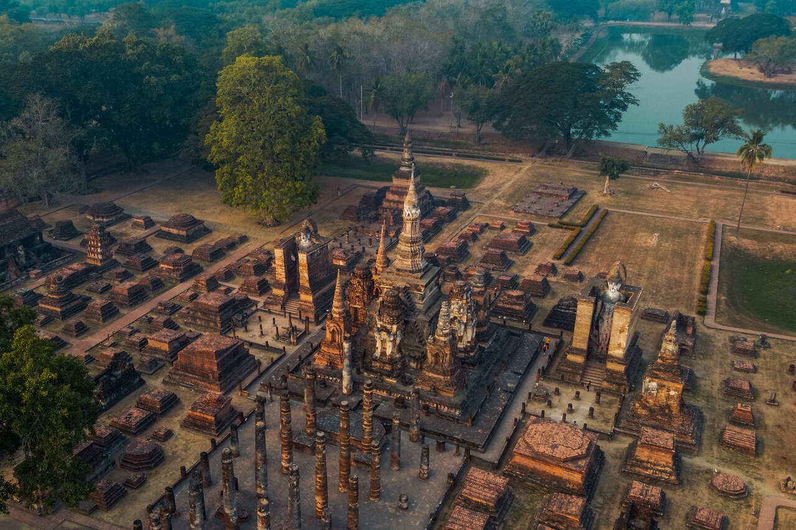

|
|
Home | About | Reviews | Articles | Contact |
| Barcelona is a city on the coast of northeastern Spain. It is the capital and largest city of the autonomous community of Catalonia, as well as the second most populous municipality of Spain. With a population of 1.6 million within city limits, its urban area extends to numerous neighbouring municipalities within the Province of Barcelona and is home to around 4.8 million people, making it the fifth most populous urban area in the European Union after Paris, the Ruhr area, Madrid, and Milan. It is one of the largest metropolises on the Mediterranean Sea, located on the coast between the mouths of the rivers Llobregat and Besòs, and bounded to the west by the Serra de Collserola mountain range, the tallest peak of which is 512 metres (1,680 feet) high. |
 |
The city is referred to as the Ciutat Comtal in Catalan and Ciudad Condal in Spanish (i.e., "Comital City" or "City of Counts"), owing to its past as the seat of the Count of Barcelona. During the Middle Ages, the city was variously known as Barchinona, Barçalona, Barchelonaa, and Barchenona.Founded as a Roman city, in the Middle Ages Barcelona became the capital of the County of Barcelona. After joining with the Kingdom of Aragon to form the confederation of the Crown of Aragon, Barcelona, which continued to be the capital of the Principality of Catalonia, became the most important city in the Crown of Aragon and the main economic and administrative centre of the Crown, only to be overtaken by Valencia, wrested from Arab domination by the Catalans, shortly before the dynastic union between the Crown of Castile and the Crown of Aragon in 1492. Barcelona has a rich cultural heritage and is today an important cultural centre and a major tourist destination. Particularly renowned are the architectural works of Antoni Gaudí and Lluís Domènech i Montaner, which have been designated UNESCO World Heritage Sites. The headquarters of the Union for the Mediterranean are located in Barcelona. |
|
Content: Culture & Tradition Best Places To Explore Live .Love .Eat Best Things To Do |

 |
Every region in Spain has traditions to call their own, and the traditions of Barcelona and Catalonia can sometimes be surprising! While every place in the world—and especially in Spain—has its own traditions that might sometimes seem a bit odd to outsiders, it seems like here in Catalonia we really do have our fair share. While some are simpler—think folkloric dance and festivals—some of them definitely could also fall into the weird and wonderful variety. Read about the age-old and sometimes quirky traditions of Barcelona!. One of Barcelona and Catalonia’s most famous traditions involves a group of people, children included, climbing on top of each other to make human castles. Castellers, as they’re known, practice this official sport on any given weekend, holiday or festival throughout the year, and they can get up to eight, nine, even ten layers high! The most dazzling part? The small child who crawls to the top! Take a look at these terrific guys in action in the video below! Gegants, or giants, play an important role in Catalan tradition and folklore. Usually representing neighborhood characters like the butcher, baker or fisherman, the giants parade around during festivals and also many special city events. There are hundreds of different characters, each one belonging to a different district or neighborhood of the city, and their twirling dance will be sure to impress! |

| 1. Picasso Musemum | |
| A museum spread over five palaces—we’d expect nothing less for Picasso, who moved to Barcelona as a 14-year-old boy and made frequent trips back throughout his life. Downstairs, a courtyard and Gothic archways lead into white studios that illuminate his works. Upstairs, the rooms are lavish: epic painted ceilings that almost drip crystal chandeliers. Visitors flock here to see Picasso's work, but the special setting is why they come back again and again. If you’re expecting Picasso’s big-hitters, you might be disappointed—for a few minutes. Guernica resides in the Reina Sofía in Madrid, The Weeping Woman at London’s Tate Modern. What Barcelona’s museum has, is everything around those postcard images. In chronological order, it shows every brushstroke (all 4,251 works’ worth) of how he moved from a classically trained painter (see Ciencia y Caridad in Room 3) to a Cubist pioneer, plus some things we never knew he did, like ceramics. | |
| 2. Park Güell | |
| Park Güell is an almost make-believe landscape: home to Barcelona’s famous mosaic lizard—the image on a thousand postcards—plus spiral towers that look like fairground slides. The city’s grandest park began life as a collaboration between entrepreneur Eusebi Güell (hence the park’s name) and Antoni Gaudí. It’s important to know your ticket options. The free ticket gets you into the park, but not into the best parts. For that you need a Monumental Cove ticket. Know that you need to book in advance online, and arrive promptly for your allotted slot—there’s zero wiggle room with timing. Parc Güell is a privatized park system composed of gardens and architectural elements located on Carmel Hill, in Barcelona, Catalonia, Spain. Carmel Hill belongs to the mountain range of Collserola – the Parc del Carmel is located on the northern face. |  |
| 3. La Rabmla | |
| Barcelona’s most famous street—a nearly one-mile pedestrianized boulevard from Plaça Cataluyna to Port Vell—is still the strolling route for the city's visitors, even if selfie-stick vendors can’t match the charm of the old-school florists, gelaterías, and candy stalls offering bites of crema catalana (a form of crème brûlée) along the way. To predict your next question: But is it La Rambla or Las Ramblas? Well, it’s really both. Originally, the area consisted of five mini-ramblas: Rambla de Canaletes, Estudis, Sant Josep, Caputxins, and Santa Mònica, but they're often lumped together and today, the street sign says La Rambla. Annoying as it is to keep your purse clenched from pickpockets for a mile, La Rambla has a charm that keeps the 78 million coming. | |
| 4. The Barcelona Pavilion. | |
| This Pavilion was designed by German architects Ludwig Mies van der Rohe and Lilly Reich for the 1929 International Exposition—a global showcase of architectural styles. Exposition over, the pavilion was duly dismantled back to Germany. It was only in the decades after—cue: a face-palming moment of hindsight—that the architectural community realized just how pivotal Mies van der Rohe’s founding symbol of modernist architecture was. In 1980, Barcelona City Council enlisted a team of Catalan architects to turn salvaged photographs and drawings into a delicate, atmospheric reconstruction. Most people’s overarching takeaway from the Pavilion is that it’s smaller than they imagined, so use this as your battery recharge before tackling the other arty big-hitters on Montjuïc, such as Museu Nacional d'Art de Catalunya (MNAC) and Fundació Joan Miró. Palau de la Música Catalana barcelona spain | |
| 5. Montjüic. | |
| There are many grand elements to Montjüic, a historic hill that’s a whole lot more than “just a hill.” For starters, the approach at ground level. From the roundabout at Plaça España (which doesn’t sound sexy, we know), it appears majestically from nowhere, a dramatic, architectural staircase leading up to the Museu Nacional d’Art de Catalunya (National Museum of Catalan Art). It looks like a palace; the water feature in front is even called the Magic Fountain. (Come at night, Thursday to Saturday, for a water-light spectacular; during the summer, from June 1 through September 30, it's Wednesday to Sunday). So far, we’ve described about 400 meters of Montjüic: the rest has more museums, the 1992 Olympic site, exotic gardens, and enough panoramic views to jam a smartphone camera roll. Important: Only tickets on your mobile device will be accepted—paper copies will not. | |

| 1. Maitea Taberna | |
| Pintxos are famous, toothpick-spiked bar snacks of the Basque region. While you’ll find locals packing in to the affordable tapas and pintxo bars along Carrer de Blai, Maitea Taberna is widely considered one of the best Basque pintxo bars in the city. The restaurant offers authentic ambiance, an extensive menu of hot and cold pintxos and plates, and fair prices. The cold, self-serve pintxos are great, but don’t miss ordering some hot pintxos off the a la carte menu. The morcilla de durgos (black pudding with rice) with apple purée is especially great. | |
| 2. Flax & Kale | |
| Of the multiple Flax and Kale locations in Barcelona, Flax and Kale Passage is by far the best. It’s open all day and great for a weekend brunch. The menu is also distinct from the others and includes the company’s astonishingly good wood-fired vegan pizzas (that also happen to be gluten-free). Chef Teresa Carles has been pioneering “flexitarian” food in Barcelona since 2014, and other highlights of her menu include bao stuffed with jackfruit “pulled pork,” house-made spicy chai kombucha, and vegan scrambles made with ackee. There are also some fish dishes, like black cod with bok choy and black garlic dashi, and yellowfin tuna tacos with Chinese cabbage and chipotle for those craving some extra omega-3s | |
| 3. Fismuler | |
| Fismuler Barcelona is the highly acclaimed result of three chefs’ shared professional passion and friendship. Nino Redruello, Patxi Zumárraga, and Jaime Santianes met in the kitchen of the legendary El Bulli in 2002, and while their careers took them on their own unique paths, they reunited at Fismuler. The restaurant is stylish and modern, with exposed brick, bare wood, and stone tiles that blur the line between the city street outside and the interior of the dining room, separated solely by a huge wall of glass. The food has clear Spanish roots, but also strays north and west, with Provençal pate and burrata with black truffle. Dishes like the ortiguillas (sea anemone) omelet and delicate semi-cured dorada (gilt head bream) with grapes and almonds are superb modern takes on Spanish classics, and the service is as informal as possible to avoid pretension while still offering a refined culinary experience. | |
| 4. Bodega La Puntual | |
| A welcome sight in the busy area around the Passeig del Born, Bodega La Puntual does what many restaurants here can’t — offer excellent food and service in a touristy area while maintaining its local charm and providing plenty of seating. For a pre-dinner bite, pull up a stool to the wine-barrel tables near the entrance and enjoy some cava and oysters. Head to the back dining room for a full meal of tapas and seasonal Catalan dishes like sauteed wild mushrooms, flour-dusted fried squid, grilled sausages, and traditional tortillas (potato omelets) prepared as they should be: made to order. | |
| 5. Cova Fumada | |
| One of the oldest restaurants in the beachside neighborhood of La Barceloneta, this is the birthplace of the famous “bomba de la Barceloneta” — a mouthwatering fried mashed-potato croquette, stuffed with savory ground beef and topped with aioli and hot sauce, which now appears on menus all over the city. In addition to the bombas, try the calamars a la planxa (grilled squid) and grilled sardines (in season in summer). If you’re adventurous, add a plate of Cap i Pota, an old-school Catalan stew of tripe, veal trotters, and veal head in tomato. | |

| 1. Tibidabo | |
| While Tibidabo mountain is a fairground, it's also so much more. You’ll first notice it from the city center: high on a summit, the silhouette of a majestic temple makes you curious to go. Officially called the Temple Expiatori del Sagrat Cor (or Sacred Heart church, easier on the tongue), its roof is topped with an enormous bronze statue of Jesus that you can take an elevator to. Mind-blown (and a little breeze-blown), you suddenly see the charm of the amusement park next to it—like its retro-styled attractions, such as a Ferris wheel with color-pop seating pods, built for the views as much as the screams. Adults love the views; kids love the rides. Finish with a gin and tonic on the terrace of Mirablau Bar, near where the blue tram stops. The edge seats rule. | |
| 2. Palo Market Fest | |
| Take an abandoned factory in the most up-and-coming part of town, plant enough foliage to fund your local garden center for life, and use the term "concept space" a LOT. Sounds trendy, right? On the thermometer of cool, Palo Market Fest is an icy Old Fashioned cocktail. Yet its atmosphere has the warm glow of having knocked a few back: live music provides a head-bopping shopping backdrop, while pop-up beer bars and insanely good food trucks mean that everyone is simply in a great mood. | |
| 3. Casa Vicens | |
| Built in the 1880s as a summerhouse for stockbroker Manel Vicens, Casa Vicens was the very first house Gaudí designed. Forget the Gaudí of La Sagrada Família fame, this is his Orientalist Period. Imagine a Moorish palace merged with a Rubik’s cube. It’s crazy. Anyone who’s a fan of tiles or maximalist design will geek out on the oriental palms, pink walls, flower-adorned tiles and flying birds. Add in a terracotta roof terrace, a couple of elaborate domes, and some Gaudí ironwork and you’re left wondering how it all harmonizes together. Because, weirdly, it does. | |
| 4. La Boqueria | |
| This is an iconic sight and educational experience in one. There’s been a Boqueria market in Barcelona since medieval times, though this exact spot has only witnessed trade for about 200 years. That elegant and distinctive iron and glass roof you’ll see was put up in 1914.Whether you want to do some food shopping or just take in the sights and sounds of a bustling urban market it’s a real eye-opener. It’s a grid of permanent stalls selling fruits, vegetables, cold meats, cheese as well as olive products.The whole market converges on an oval plan of fishmongers in the centre.Cool off with a beer and a tapa at one of the market’s bars. | |
| 5. Camp Nou | |
| In the western Les Corts neighbourhood is the 99,000-seater stadium that has been the home ground of FC Barcelona since 1957.It’s one of Europe’s football cathedrals and even if you have no affinity for the team you have to visit Camp Nou to appreciate the dizzying scale of the arena. And if you are a fan you’ll be in heaven, touring the stadium and browsing the memorabilia of one of the world’s most prestigious teams at the museum. | |